物品購入届 操作マニュアル
物品購入届をウェブ画面で入力・承認し、承認済みの届出から販売管理システムへ取り込む CSV を出力するための手引きです。実際の画面と、図の中の番号（123…）に沿って操作を説明します。
1. システム概要と画面構成
このシステムでは、紙で回していた物品購入届を、画面で入力して承認者に回せます。承認された届出は、経理担当が資材コードなどを確かめてから CSV に出力し、販売管理システムへ取り込みます。
ログインはありません。画面の右上で「操作者」（自分）を選んで使います。承認者・管理者・経理の人を選ぶときは、暗証番号を入力します（2章）。
1.1 画面の上部
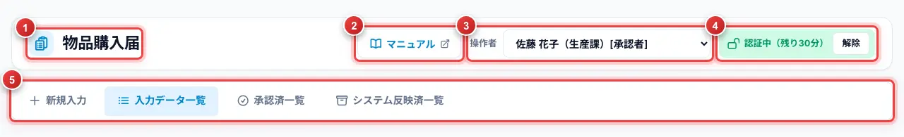
| 番号 | 名称 | 説明 |
|---|---|---|
| 1 | タイトル | システムの名前です。 |
| 2 | マニュアル | このマニュアルを別のタブで開きます。 |
| 3 | 操作者 | 画面を使う人を選びます。名前の後ろの [承認者] などは、その人の権限です（2.1）。 |
| 4 | 認証状態 | 暗証番号で認証している間は 認証中（残りN分） と出ます。解除 で認証をやめます。 |
| 5 | タブ | 新規入力 入力データ一覧 承認済一覧 システム反映済一覧 を切り替えます。管理者を選んだときだけ、マスタ管理 も出ます。 |
1.2 届出の流れとステータス
届出は、次のステータスの順に進みます。一覧では、行の色でステータスが分かります。
| ステータス | 意味 | 次に進める操作 |
|---|---|---|
| 一時保存 | 入力の途中です。必須の項目が空でも保存できます。 | 入力者が 入力完了 または 承認依頼 |
| 入力完了 | 入力を終え、承認依頼の前の状態です。 | 入力者が 承認依頼 |
| 承認依頼中 | 承認者の承認を待っています。 | 承認者が 承認 または 差し戻し |
| 差し戻し | 承認者から差し戻されました。理由が表示されます。 | 入力者が直して、もう一度 承認依頼 |
| 承認済 | 承認されました。CSV の出力を待っています。 | 経理担当が CSV を出力し、反映済にする |
| システム反映済 | 販売管理システムへの取り込みが終わりました。 | （閲覧のみ。管理者は承認済に戻せます） |
1.3 役割とできること
| 役割 | できること | 暗証番号 |
|---|---|---|
| 入力者（全員） | 届出の入力・保存・承認依頼、自分の届出の修正・削除・承認依頼の取消 | 不要 |
| 承認者 | 自分が承認者に指定された届出の承認・差し戻し・承認の取消 | 必要 |
| 経理 | 資材コードの確定、取引先コードの補完、CSV出力、反映済にする | 必要 |
| 管理者 | 経理の操作に加えて、承認済に戻す、マスタ管理（取込・暗証番号の発行・設定の閲覧） | 必要 |
2. 使い始める前に（操作者と暗証番号）
2.1 操作者を選ぶ
画面の右上の 操作者 で、自分の名前を選びます。選んだ人は記憶され、次に開いたときも選ばれた状態になります。
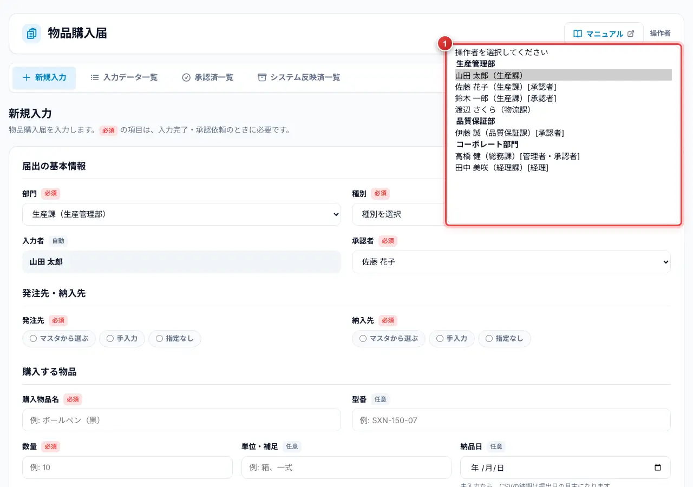
| 番号 | 名称 | 説明 |
|---|---|---|
| 1 | 操作者の一覧 | 部ごとにまとまっています。権限を持つ人には、名前と課の後ろに [管理者] [経理] [承認者] が付きます。複数の権限を持つ人は [管理者・承認者] のように並びます。 |
2.2 暗証番号の入力
権限を持つ人（承認者・管理者・経理）を選ぶと、切り替わる前に暗証番号を聞かれます。
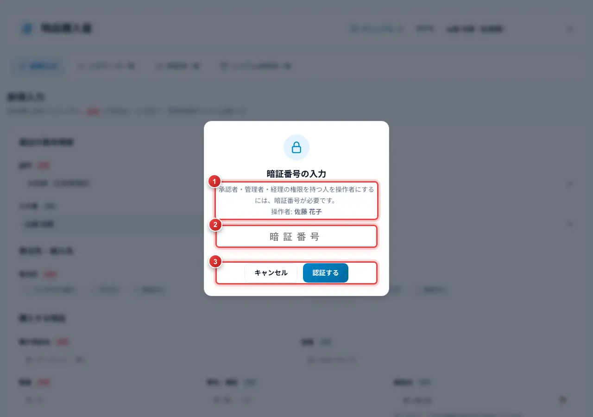
| 番号 | 名称 | 説明 |
|---|---|---|
| 1 | 認証する人 | 選ぼうとしている人の名前です。 |
| 2 | 暗証番号 | 数字6桁の暗証番号を入力します。 |
| 3 | キャンセル 認証する | 正しい番号で 認証する を押すと、操作者が切り替わります。キャンセル を押すと、元の操作者に戻ります。 |
- 認証は30分有効です。時間が切れても操作者は選ばれたままで、承認などの操作をするときに、もう一度暗証番号を聞かれます。
- 新しいタブで開いたときも、前回の操作者が権限を持つ人なら暗証番号を聞かれます。キャンセルすると、操作者は未選択になります。
- 権限を持つ人が 解除 を押すと、操作者も未選択に戻ります。
- 入力だけの人を選ぶときは、暗証番号は要りません。
3. 新規入力
新規入力 タブで、物品購入届を入力します。1つの届出には、1つの物品を入力します。
項目名の横の 必須 の項目は、入力完了・承認依頼のときに必要です。任意 の項目は空でもかまいません。どの項目を必須にするかは、管理者が決めます（8.4）。
3.1 基本情報と発注先・納入先
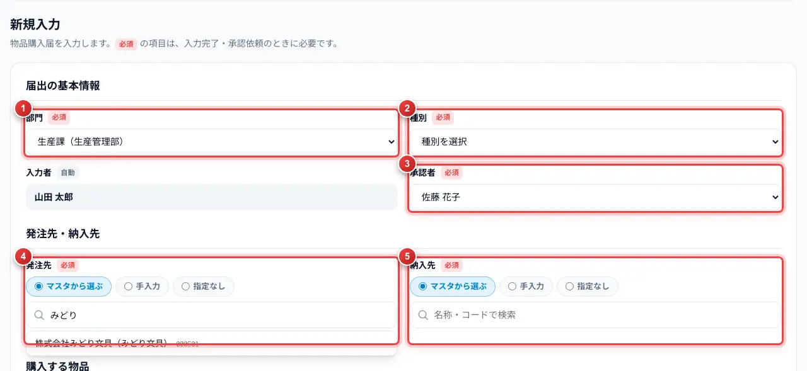
| 番号 | 名称 | 説明 |
|---|---|---|
| 1 | 部門 | 初めは、操作者の所属の部門が入っています。部門を変えると、承認者の候補も変わります。 |
| 2 | 種別 | 物品の種別を選びます。資材コードの候補を選ぶときに使います。 |
| 3 | 承認者 | その部門の承認者から選びます。候補がいないときは承認依頼ができないので、管理者に連絡してください。 |
| 4 | 発注先 | マスタから選ぶ は、名称・カナ・略称・コードで検索して選びます。マスタに無いときは 手入力 で名称を入力し、決まっていないときは 指定なし を選びます。 |
| 5 | 納入先 | 発注先と同じように選びます。 |
3.2 購入する物品と添付
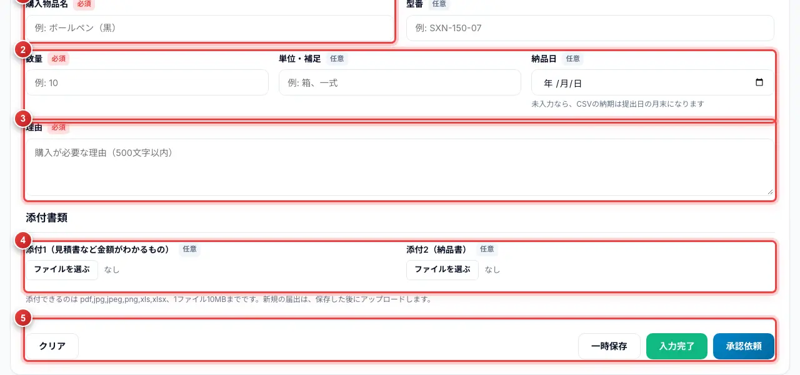
| 番号 | 名称 | 説明 |
|---|---|---|
| 1 | 購入物品名・型番 | 物品の名前（100文字まで）と型番を入力します。 |
| 2 | 数量・単位補足・納品日 | 数量は0より大きい数を入力します（小数は3桁まで。全角でも入力できます）。納品日が空のときは、CSV の納期は提出日の月末になります。 |
| 3 | 理由 | 購入する理由を入力します（500文字まで）。 |
| 4 | 添付1・添付2 | 見積書などと納品書を添付できます。ファイルを選ぶ でファイルを選ぶと、保存のときにアップロードされます。 |
| 5 | ボタン | 保存のボタンです（3.3）。 |
3.3 保存と承認依頼
| ボタン | 動き |
|---|---|
| 一時保存 | 入力の途中で保存します。必須の項目が空でも保存できます。 |
| 入力完了 | 必須の項目を確かめて保存します。まだ承認者には回りません。 |
| 承認依頼 | 必須の項目を確かめて、承認者に回します。この日が提出日になります。 |
- 項目を入力します。
- 承認依頼 を押し、確認の画面で 承認依頼する を押します。
- 入力に足りないところがあると、その項目の下に赤い文字で理由が出ます。直してから、もう一度押します。
4. 入力データ一覧
すべての届出（削除したものを除く）を一覧で表示します。行の色と左端の色の帯は、ステータスを表します。
4.1 画面の見方
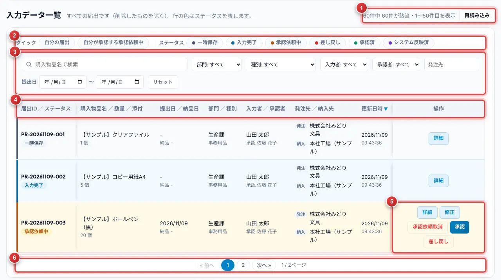
| 番号 | 名称 | 説明 |
|---|---|---|
| 1 | 件数・再読み込み | 該当する件数と、表示している範囲です。再読み込み で最新の内容を読み直します。 |
| 2 | クイック・ステータス | 自分の届出 自分が承認する承認依頼中 で、よく使う絞り込みができます。ステータスのボタンは、押したステータスだけを表示します（複数選べます）。 |
| 3 | 絞り込み | 購入物品名・部門・種別・入力者・承認者・発注先・提出日で絞り込みます。リセット で元に戻します。 |
| 4 | 見出し | 見出しの名前を押すと、その項目で並び替えます（もう一度押すと逆順）。「部門／種別」のような見出しは、それぞれの名前を押せます。 |
| 5 | 操作 | その届出でできる操作のボタンだけが出ます（詳細 は常に出ます）。 |
| 6 | ページ送り | 件数が多いときは、ページに分けて表示します。番号や 次へ » で移ります。 |
- スクロールしても、画面の上の部分と表の見出しは動きません。表の中だけがスクロールします。
- 画面が狭くて横にスクロールするときも、左の「届出ID／ステータス」と右の「操作」の列は固定されます。
4.2 詳細と修正
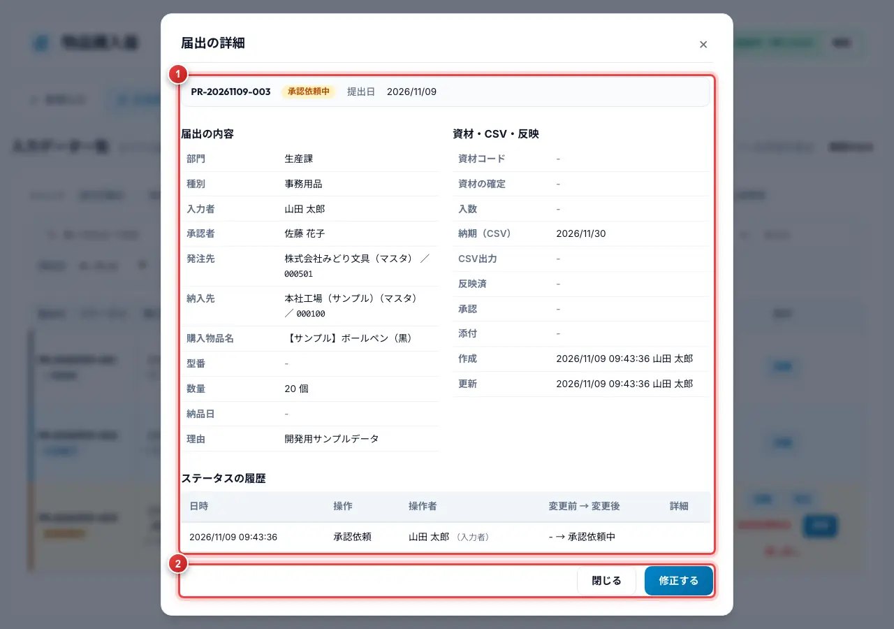
| 番号 | 名称 | 説明 |
|---|---|---|
| 1 | 内容 | 届出の内容、添付、操作の履歴を表示します。添付はここから表示・ダウンロードできます。 |
| 2 | 修正する 閉じる | 修正できる届出なら、修正する で新規入力タブを修正の状態で開きます。 |
- 入力者は、一時保存・入力完了・差し戻しの届出を修正できます。承認依頼中の届出は、承認依頼を取り消してから直すこともできます（承認依頼取消）。
- 一時保存・入力完了の届出は、削除 できます。
- 承認依頼中・承認済の届出では、部門と承認者は変えられません。
5. 承認者の操作
自分が承認者に指定された届出は、入力データ一覧の 自分が承認する承認依頼中 で絞り込めます。
5.1 承認する
- 入力データ一覧で、承認する届出の 詳細 を押して内容を確かめます。
- 行の 承認 を押し、確認の画面で承認します。
- 承認すると、ステータスが「承認済」になり、システムが資材コードの候補を選びます。
5.2 差し戻す
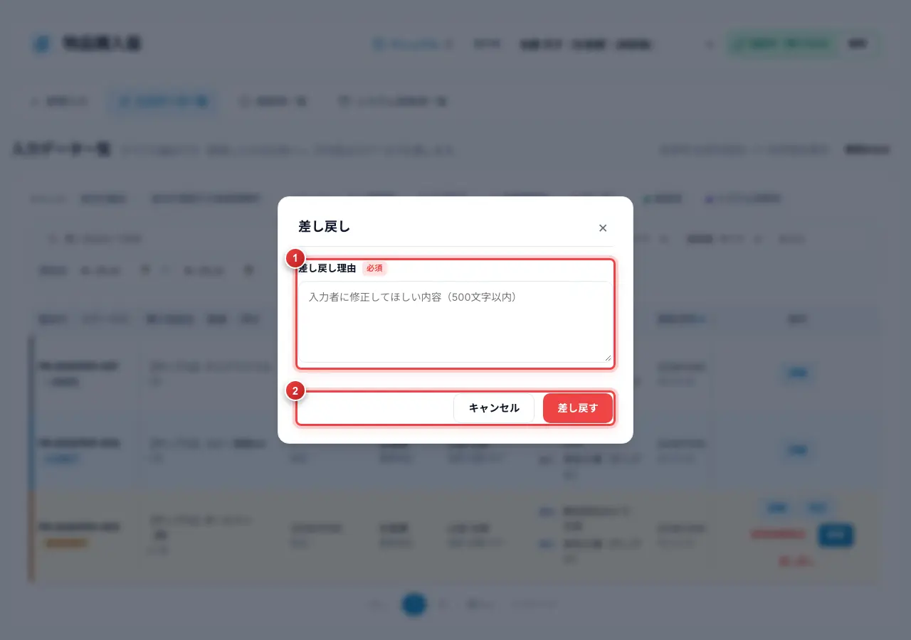
| 番号 | 名称 | 説明 |
|---|---|---|
| 1 | 差し戻し理由 | 直してほしいことを入力します（必須。500文字まで）。入力者の画面に表示されます。 |
| 2 | ボタン | 差し戻すと、ステータスが「差し戻し」になります。 |
5.3 承認を取り消す
承認済の届出を、承認依頼中に戻します。届出の 修正 で開いた画面の 承認取消 を押します（承認者と管理者）。CSV を出力済みだった場合は、その印も外れます。
6. 承認済一覧（経理・管理者）
承認された届出の一覧です。経理担当・管理者は、資材コードと取引先コードを確かめてから CSV を出力します。他の人は閲覧だけできます。
6.1 画面の見方
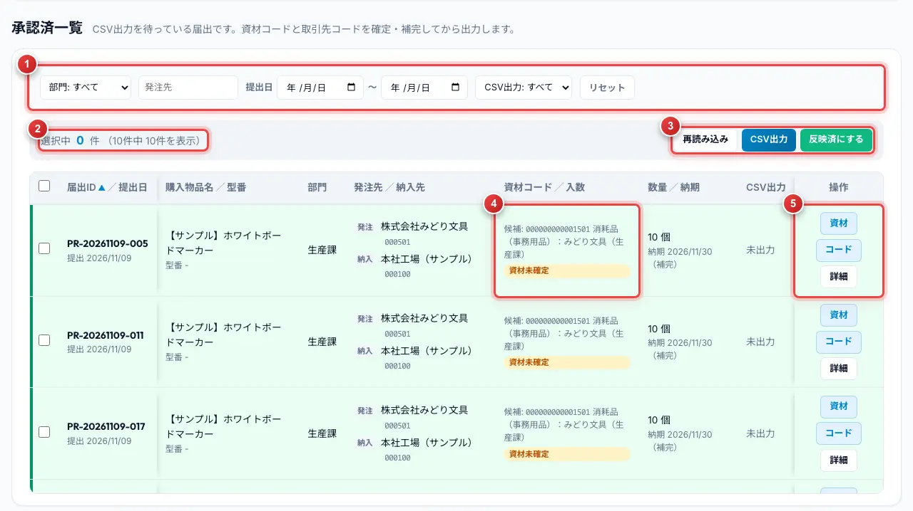
| 番号 | 名称 | 説明 |
|---|---|---|
| 1 | 絞り込み | 部門・発注先・提出日・CSV出力の済／未で絞り込みます。 |
| 2 | 選択中の件数 | 左端のチェックで選んだ件数です。ページをまたいで選んだ件数も合計されます。見出しのチェックは、今のページの行をまとめて選びます。 |
| 3 | CSV出力 反映済にする | 選んだ届出を CSV に出力します。取り込みが終わったら、反映済にします（6.4）。 |
| 4 | 資材コード／入数 | 確定していないときは、システムが選んだ候補と 資材未確定 が出ます。発注先・納入先のコードが無いときは コード未設定 が出ます。 |
| 5 | 資材 コード 詳細 | 資材コードの確定（6.2）と、取引先コードの補完（6.3）を行います。 |
6.2 資材コードの確定
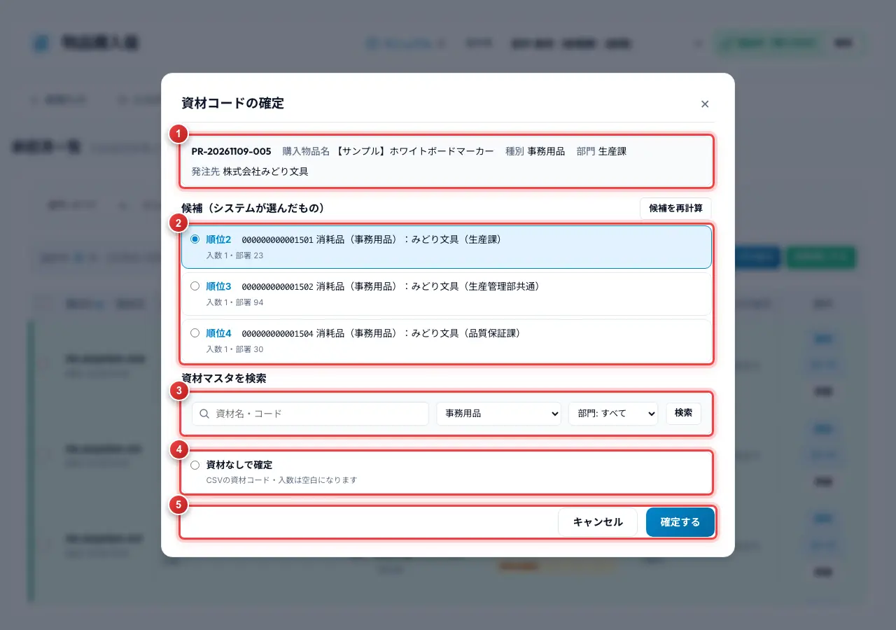
| 番号 | 名称 | 説明 |
|---|---|---|
| 1 | 対象の届出 | 購入物品名・種別・部門・発注先です。 |
| 2 | 候補 | システムが選んだ資材です。順位が小さいほど、届出の内容に近いものです。候補を再計算 で選び直せます。 |
| 3 | 資材マスタを検索 | 候補に無いときは、資材名・コード・種別・部門で検索して選びます。 |
| 4 | 資材なしで確定 | 当てはまる資材が無いときに選びます。CSV の資材コード・入数は空になります。 |
| 5 | 確定する | 選んだ資材で確定します。 |
6.3 取引先コードの補完
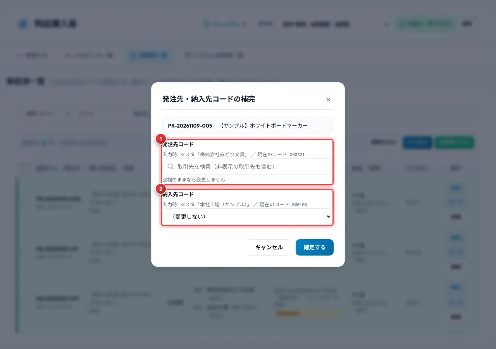
| 番号 | 名称 | 説明 |
|---|---|---|
| 1 | 発注先コード | 入力時の発注先と今のコードを確かめ、取引先を検索して選びます。発注先マスタで非表示の取引先も検索できます。 |
| 2 | 納入先コード | 納入先マスタから選びます。変えないときは （変更しない） のままにします。 |
6.4 CSV出力と反映済にする
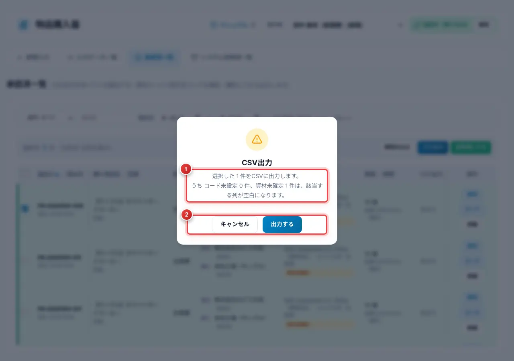
| 番号 | 名称 | 説明 |
|---|---|---|
| 1 | 確認の内容 | 出力する件数と、コード未設定・資材未確定の件数です。該当する列は空で出力されます。 |
| 2 | 出力する | CSV（Shift_JIS）をダウンロードします。 |
- 承認済一覧で、出力する届出のチェックを入れます。
- CSV出力 を押し、確認の画面で 出力する を押します。
- ダウンロードした CSV を、販売管理システムに取り込みます。
- 取り込みが終わったら、同じ届出を選んで 反映済にする を押します。ステータスが「システム反映済」になります。
7. システム反映済一覧
販売管理システムへ取り込み済みの届出です。閲覧だけできます。
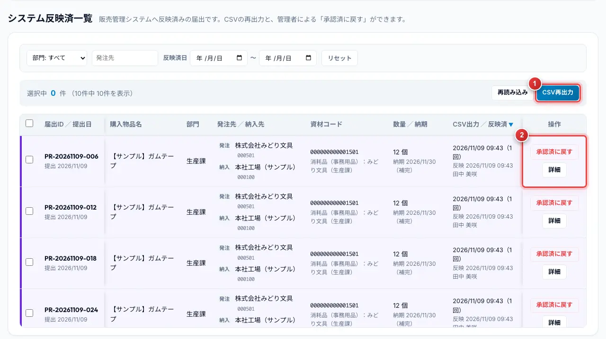
| 番号 | 名称 | 説明 |
|---|---|---|
| 1 | CSV再出力 | 選んだ届出の CSV をもう一度出力します（経理・管理者）。 |
| 2 | 承認済に戻す | 取り込みをやり直すときなどに、承認済に戻します（管理者のみ）。 |
8. 管理者編
管理者を操作者に選ぶと、マスタ管理 タブが出ます。
8.1 マスタ取込
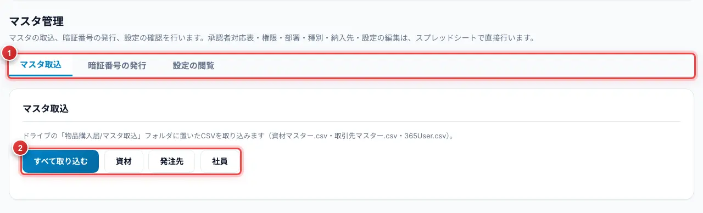
| 番号 | 名称 | 説明 |
|---|---|---|
| 1 | メニュー | マスタ取込 暗証番号の発行 設定の閲覧 を切り替えます。 |
| 2 | 取込のボタン | Google ドライブの「マスタ取込」フォルダに置いた CSV（販売管理システムの資材マスター・取引先マスター、Microsoft 365 の社員一覧）を取り込みます。結果（件数・追加・更新・無効化）が下に出ます。 |
8.2 暗証番号の発行
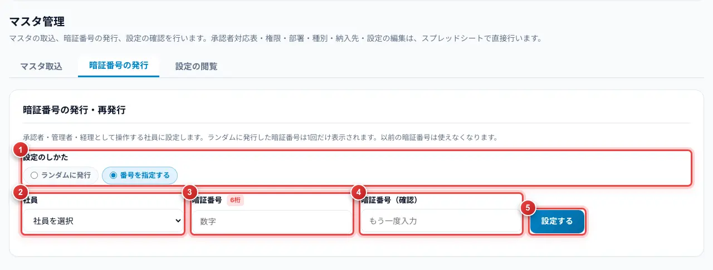
| 番号 | 名称 | 説明 |
|---|---|---|
| 1 | 設定のしかた | ランダムに発行 は、システムが番号を決めて1回だけ表示します。番号を指定する は、管理者が番号を決めます。 |
| 2 | 社員 | 暗証番号を設定する人を選びます。 |
| 3 | 暗証番号 | 数字6桁で入力します（番号を指定するときだけ）。 |
| 4 | 暗証番号（確認） | 同じ番号をもう一度入力します。 |
| 5 | 設定する | 暗証番号を設定します。以前の番号は使えなくなり、ロックも解除されます。 |
8.3 設定の閲覧
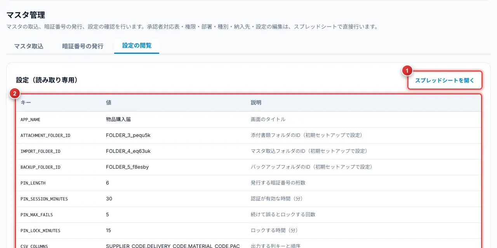
| 番号 | 名称 | 説明 |
|---|---|---|
| 1 | スプレッドシートを開く | データのスプレッドシートを開きます。設定やマスタは、スプレッドシートで直接編集します。 |
| 2 | 設定の一覧 | 「設定」シートのキー・値・説明です（閲覧のみ）。 |
8.4 スプレッドシートで変えること
| 変えたいこと | 変える場所 | 反映のしかた |
|---|---|---|
| 入力の必須・任意 | 「入力項目」シートの「必須」列のチェック（部門・承認者は常に必須） | 画面を再読み込み |
| 一覧の1ページの件数 | 「設定」シートの LIST_PAGE_SIZE（0 なら全件） | 画面を再読み込み |
| 暗証番号の桁数・有効時間・ロック | 「設定」シートの PIN_LENGTH・PIN_SESSION_MINUTES・PIN_MAX_FAILS・PIN_LOCK_MINUTES | 画面を再読み込み |
| CSV の列・書式 | 「設定」シートの CSV_ で始まるキー | 次の出力から |
| 添付の形式・大きさ | 「設定」シートの ATTACHMENT_ALLOWED_EXT・ATTACHMENT_MAX_MB | 画面を再読み込み |
| 承認者・権限（管理者・経理） | 「承認者対応表」「権限マスタ」シート | メニュー「キャッシュをクリア」の後、画面を再読み込み |
| 部署・種別・納入先の有効／無効 | 「部署マスタ」「種別マスタ」「納入先マスタ」の「有効」列 | メニュー「キャッシュをクリア」の後、画面を再読み込み |
9. 付録・FAQ
9.1 用語
| 用語 | 意味 |
|---|---|
| 操作者 | 画面を使っている人。画面の右上で選びます。 |
| 届出ID | 届出の番号。「PR-年月日-連番」の形です。 |
| 提出日 | 承認依頼をした日。納品日が空のときは、この日の月末が CSV の納期になります。 |
| 資材コード | 販売管理システムの資材の番号。CSV に出力します。 |
| 反映済 | CSV を販売管理システムに取り込み終わった状態。 |